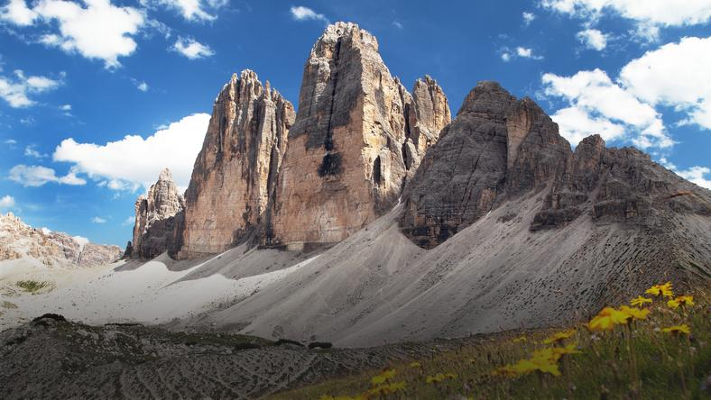
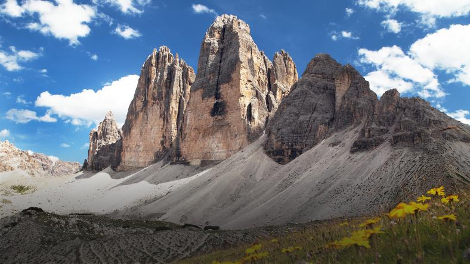

Nasza pierwsza strona
 Taką stronę stworzyłem pomimo swojego lenistwa :)
Strona powstała po obejżeniu filmiku Samuraj Programowania
Miło przypomnać sobie pierwszy projekt
 Taką stronę stworzyłem pomimo swojego lenistwa :)
Strona powstała po obejżeniu filmiku Samuraj Programowania
Miło przypomnać sobie pierwszy projekt